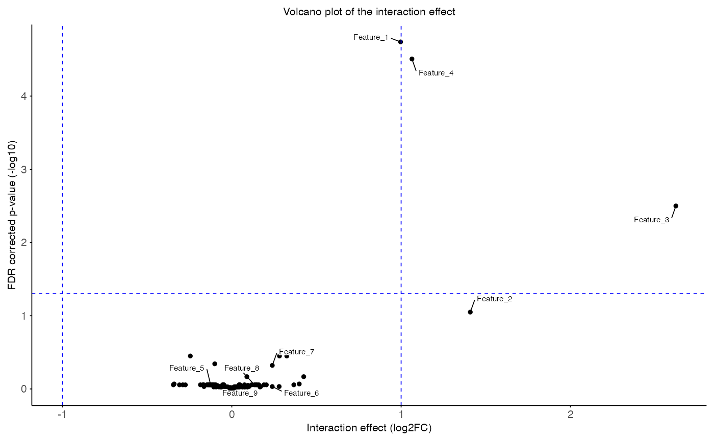

Subset interaction effect
Source:vignettes/subset_interaction_effect.Rmd
subset_interaction_effect.RmdIntroduction
In omics research frameworks like limma are gold
standard to test for differetnial expressed genes. However inbalances of
the input data might increase the FPR of such linear models. A subset
approach should mitigate this problem.
Overrepresentation of EUR ancestry
In omics research EUR ancestry is often overrepresented compared to
other ancestries. Hence, data of non-Europeans is often sparse and can
effect the discovery of true effects. The
frameworkCrossAncestryGenPhen tries to be fair by
subsampling the overrepresented ancestry to match the sample size of the
underrepresented ancestry. The following code snippet showcases such an
imbalance on a simulated dataset.
library(CrossAncestryGenPhen)
# Seed for reproducibility
set.seed(42)
# Example data
n_features <- 100
n_EUR <- 600
n_AFR <- 40
id_EUR <- paste0("EUR_", seq_len(n_EUR))
id_AFR <- paste0("AFR_", seq_len(n_AFR))
lambda_features <- sample(
c(
rpois(20, 3), # ~20 low-count features
rpois(60, 20), # ~60 medium-count features
rpois(20, 120) # ~20 high-count features
),
size = n_features,
replace = FALSE
)
# Expression matrices for EUR and AFR ancestries
X <- sapply(lambda_features, function(lam) rpois(n_EUR, lambda = lam))
Y <- sapply(lambda_features, function(lam) rpois(n_AFR, lambda = lam))
colnames(X) <- colnames(Y) <- paste0("Feature_", seq_len(n_features))
# Metadata for EUR and AFR ancestries
# EUR: overrepresented compared to AFR
MX <- data.frame(
condition = factor(c(rep("Control", 400), rep("Case", 200)), levels = c("Control", "Case")),
ancestry = "EUR",
sex = sample(c("Male", "Female"), n_EUR, replace = TRUE),
age = round(rnorm(n_EUR, mean = 50, sd = 12))
)
# AFR: underrepresented compared to EUR
MY <- data.frame(
condition = factor(c(rep("Control", 10), rep("Case", 30)), levels = c("Control", "Case")),
ancestry = "AFR",
sex = sample(c("Male", "Female"), n_AFR, replace = TRUE),
age = round(rnorm(n_AFR, mean = 48, sd = 11))
)
# Rownames of matrix must be smaple ids
rownames(X) <- rownames(MX) <- id_EUR
rownames(Y) <- rownames(MY) <- id_AFR
# Spike in effect in AFR Case (strong effect, but only for half of AFR cases)
# AFR Case: strong effect, half of cases
afr_case_idx <- which(MY$condition == "Case")
afr_spike_idx <- sample(afr_case_idx, length(afr_case_idx) / 2)
Y[afr_spike_idx, 1:4] <- Y[afr_spike_idx, 1:4] +
rpois(length(afr_spike_idx) * 4, lambda = 80)
# EUR Case: weaker effect, 20% of cases
eur_case_idx <- which(MX$condition == "Case")
eur_spike_idx <- sample(eur_case_idx, length(eur_case_idx) * 0.2)
X[eur_spike_idx, 1:4] <- X[eur_spike_idx, 1:4] +
rpois(length(eur_spike_idx) * 4, lambda = 20)
# Plot imbalance
plot_imbalanced_groups(
MX = MX,
MY = MY,
x_var = "ancestry",
fill_var = "condition",
title = "Imbalanced ancestry groups",
x_label = "Ancestry",
y_label = "No. of patients"
)
# Plot features
plot_feature(
X = X,
Y = Y,
MX = MX,
MY = MY,
x_var = "ancestry",
fill_var = "condition",
title = "Feature counts",
x_label = "Ancestry",
y_label = "Z-score"
)

Contrasts in limma_interaction_effect
The function limma_interaction_effect() fits a 2 × 2
design (two groups × two ancestries) and evaluates four main
contrasts plus the interaction.
Here is a summary of what each contrast represents:
| Coef type | Formula | Interpretation |
|---|---|---|
| baseline_1 | G1.A2 – G1.A1 |
Ancestry effect (A2 vs. A1) within group G1. |
| baseline_2 | G2.A2 – G2.A1 |
Ancestry effect (A2 vs. A1) within group G2. |
| relationship_1 | G2.A1 – G1.A1 |
Group effect (G2 vs. G1) within ancestry A1. |
| relationship_2 | G2.A2 – G1.A2 |
Group effect (G2 vs. G1) within ancestry A2. |
| interaction | (G2.A2 – G1.A2) – (G2.A1 – G1.A1) |
Does the group effect differ by ancestry? (group × ancestry interaction). |
-
G1 / G2 = the two levels of your
g_colvariable (e.g. Control / Case).
-
A1 / A2 = the two ancestries provided
(
MX == A1andMY == A2).
res <- limma_interaction_effect(
X = X,
Y = Y,
MX = MX,
MY = MY,
g_col = "condition",
a_col = "ancestry",
covariates = c("sex", "age"),
use_voom = TRUE,
verbose = TRUE
)
#>
#> Linear model summary:
#> Formula: ~0 + groups + sex + age
#> Groups: Control.EUR Case.EUR Control.AFR Case.AFR
#> Baseline: Control.AFR - Control.EUR Case.AFR - Case.EUR
#> Relationship: Case.EUR - Control.EUR Case.AFR - Control.AFR
#> Interaction: (Case.AFR - Control.AFR) - (Case.EUR - Control.EUR)
print(head(res))
#> coef_type contrast feature T_obs p_value
#> 1 baseline_1 Control.AFR - Control.EUR Feature_1 -0.10683710 0.5296430
#> 2 baseline_1 Control.AFR - Control.EUR Feature_2 0.18229653 0.6783480
#> 3 baseline_1 Control.AFR - Control.EUR Feature_3 -0.66960349 0.2858098
#> 4 baseline_1 Control.AFR - Control.EUR Feature_4 -0.03846892 0.8395951
#> 5 baseline_1 Control.AFR - Control.EUR Feature_5 0.15718092 0.1140348
#> 6 baseline_1 Control.AFR - Control.EUR Feature_6 -0.10661937 0.7439013
#> p_adj ave_expr
#> 1 0.8682672 12.618695
#> 2 0.9311933 10.371654
#> 3 0.8682672 9.929222
#> 4 0.9433653 12.358806
#> 5 0.8682672 12.407350
#> 6 0.9311933 9.058603The output can easily be filtered for the coefficient of interest and
plotted with the function plot_volcano().
# Filter for interaction effect
interaction_res <- subset(res, coef_type == "interaction")
plot_volcano(
data = interaction_res,
x_var = "T_obs",
y_var = "p_adj",
sig_thr = 0.05,
effect_thr = 1,
features = head(interaction_res$feature, 9),
title = "Volcano plot of the interaction effect",
x_label = "Interaction effect (log2FC)",
y_label = "FDR corrected p-value (-log10)"
)
plot_pvalue_distribution(
data = interaction_res,
x_var = "p_value",
fill_var = "ave_expr",
facet_col = NULL,
facet_levels = NULL,
title = "P-value distribution of interaction effects",
x_label = "P-value",
y_label = "Count",
fill_label = "Aver. Expr.\n(logCPM)"
)
Assuming we found significant
Single subset run
Stratification step
The function split_stratified_ancestry_sets creates a
stratified subset to account for sample size but also control for the
phenotype imbalance in the underrepresented ancestry. The idea is to
create a EUR Train-set, which is the remaining EUR cohort
after subsampling, a EUR-subset Test-set (mimicking the
underrepresented ancestry) based on the compared ancestry
Inferecnce-set. The function
plot_stratified_sets plots the stratified ancestry sets.
The function plot_stratified_feature allows to plot single
or multiple features per split.
# Split the data into stratified sets
split <- split_stratified_ancestry_sets(
X = X,
Y = Y,
MX = MX,
MY = MY,
g_col = "condition",
a_col = "ancestry",
seed = 42,
verbose = TRUE
)
#>
#> Stratified split summary:
#> EUR (Reference, R): N: 560 Control: 390 Case: 170
#> EUR (Subset, X): N: 40 Control: 10 Case: 30
#> AFR (Inference, Y): N: 40 Control: 10 Case: 30
# Visulaize stratified sets
plot_stratified_sets(
MX = split$X$meta,
MY = split$Y$meta,
MR = split$R$meta,
x_var = "ancestry",
fill_var = "condition",
title = "Stratified ancestry sets",
x_label = "Ancestry",
y_label = "No. of patients"
)
# Visulaize stratified features
plot_stratified_feature(
X = split$X$counts,
Y = split$Y$counts,
R = split$R$counts,
MX = split$X$meta,
MY = split$Y$meta,
MR = split$R$meta,
x_var = "ancestry",
fill_var = "condition",
title = "Feature counts in stratified ancestry sets",
x_label = "Ancestry",
y_label = "Z-score"
)Limma interaction effect on single subset
The function split_stratified_ancestry_sets creates on
subset of the overrepresented ancestry. Note: A single subset only
generates one estimate of the difference it is recomendet to run
multiple subsets to get a more robust estimate of the interaction
effect.
res <- limma_interaction_effect(
X = split$X$counts,
Y = split$Y$counts,
MX = split$X$meta,
MY = split$Y$meta,
g_col = "condition",
a_col = "ancestry",
covariates = c("sex", "age"),
use_voom = TRUE,
verbose = TRUE
)
#>
#> Linear model summary:
#> Formula: ~0 + groups + sex + age
#> Groups: Control.EUR Case.EUR Control.AFR Case.AFR
#> Baseline: Control.AFR - Control.EUR Case.AFR - Case.EUR
#> Relationship: Case.EUR - Control.EUR Case.AFR - Control.AFR
#> Interaction: (Case.AFR - Control.AFR) - (Case.EUR - Control.EUR)
res <- subset(res, coef_type == "interaction")
print(head(res))
#> coef_type contrast feature
#> 401 interaction (Case.AFR - Control.AFR) - (Case.EUR - Control.EUR) Feature_1
#> 402 interaction (Case.AFR - Control.AFR) - (Case.EUR - Control.EUR) Feature_2
#> 403 interaction (Case.AFR - Control.AFR) - (Case.EUR - Control.EUR) Feature_3
#> 404 interaction (Case.AFR - Control.AFR) - (Case.EUR - Control.EUR) Feature_4
#> 405 interaction (Case.AFR - Control.AFR) - (Case.EUR - Control.EUR) Feature_5
#> 406 interaction (Case.AFR - Control.AFR) - (Case.EUR - Control.EUR) Feature_6
#> T_obs p_value p_adj ave_expr
#> 401 1.2186459 0.01163693 0.5036107 12.970857
#> 402 1.9562581 0.09064993 0.5036107 11.104253
#> 403 3.0480689 0.03312673 0.5036107 10.577955
#> 404 1.0454901 0.07158428 0.5036107 12.696330
#> 405 -0.1412233 0.35553674 0.8228834 12.451729
#> 406 -0.2792438 0.57859836 0.8358211 9.023236Multiple subset runs
As mentioned, a single subset only generates one estimate of the difference. To get a more robust estimate of the interaction effect, it is recommended to run multiple subsets. In this case the pipeline is similar to run a single subset but with concerns on how to aggregate over multiple subsets. Because the samples from the underrepresented ancestry are identical over multiple subsets this introduced dependence. Hence, aggregating p-values or test statistics is not trivial.
# We track the SampleIDs and the summary statisitcs over many subsets
res_log <- list()
id_log <- list()
for (i in 1:10) {
# Stratified ancestry sets
split <- split_stratified_ancestry_sets(
X = X,
Y = Y,
MX = MX,
MY = MY,
g_col = "condition",
a_col = "ancestry",
seed = 42 + i,
verbose = FALSE
)
# Store sample ids
id_log[[i]] <- track_sample_ids(split, i)
# Limma interaction effects
res <- limma_interaction_effect(
X = split$X$counts,
Y = split$Y$counts,
MX = split$X$meta,
MY = split$Y$meta,
g_col = "condition",
a_col = "ancestry",
covariates = c("sex", "age"),
use_voom = TRUE,
verbose = FALSE
)
res <- subset(res, coef_type == "interaction")
# Store subset runs
res$iteration <- i
res_log[[length(res_log) + 1]] <- res
}
# Combine across iterations
combined_res <- do.call(rbind, res_log)
combined_id <- do.call(rbind, id_log)With this loop we calculated the interaction effect over many
subsets. Hence, we have a p-value for each feature in each subset. We
can plot this distribution of p-values with the function
plot_pvalue_distribution().
# Visualize p-value distribution
plot_pvalue_distribution(
data = combined_res,
x_var = "p_value",
fill_var = "T_obs",
facet_col = "feature",
title = "Histogram of p-values across multiple subsets",
x_label = "P-value",
y_label = "Count",
fill_label = "Log2FC",
bins = 50,
fill_bins = 9
)
Dependence of multiple subsets
From a biological view, feautures with low p-value across subsets are
more likely to be true positives. However, from a statistical
perspective, the p-values are not independent across subsets and hence
to aggregate them it is important to consider. The samples are shared
across the subsets and this sharing of samples can be visualized using
the plot_jaccard_heatmap() function.
plot_jaccard_heatmap(
data = combined_id,
role = "X",
title = "Jaccard heatmap of used sampleIDs in subsets",
)
plot_jaccard_heatmap(
data = combined_id,
role = "Y",
title = "Jaccard heatmap of used sampleIDs in inference",
)Correlation of the test statistic and the p-values can be visualized
using the plot_correlation_heatmap() function.
plot_correlation_heatmap(
data = combined_res,
value_col = "T_obs",
iter_col = "iteration",
title = "Test statistic correlation across subsets",
)
plot_correlation_heatmap(
data = combined_res,
value_col = "p_value",
iter_col = "iteration",
title = "P-value correlation across subsets",
)Aggregation of multiple subsets
To aggregate the p-values for each subset we decided on two methods
one is simply taking the mean of the p-values. Another approach is to
use a cauchy-combination test which is possible under abbretrary
dependance. The function to call on multiple subsets is
summarize_subsets().
# Aggregation of p-values
aggregated_res <- summarize_subsets(
data = combined_res
)
print(head(aggregated_res))
#> feature T_obs p_value p_adj cct_value cct_adj prob_sig
#> 1 Feature_1 0.9433479 0.06121674 0.738991 0.04089120 0.6457288 0
#> 2 Feature_2 1.3356309 0.28316862 0.738991 0.21907536 0.9950796 0
#> 3 Feature_3 2.3774571 0.10392259 0.738991 0.05783392 0.6457288 0
#> 4 Feature_4 0.9913829 0.08259291 0.738991 0.05924215 0.6457288 0
#> 5 Feature_5 -0.1450369 0.40067978 0.738991 0.25437098 0.9950796 0
#> 6 Feature_6 0.1433863 0.63721534 0.738991 0.86123688 0.9950796 0
#> ave_expr
#> 1 12.983109
#> 2 11.135611
#> 3 10.681342
#> 4 12.756946
#> 5 12.409589
#> 6 9.063243
plot_volcano(
data = aggregated_res,
x_var = "T_obs",
y_var = "p_adj",
sig_thr = 0.05,
effect_thr = 1,
features = head(interaction_res$feature, 9),
title = "Volcano plot with mean p-values",
x_label = "Interaction effect (log2FC)",
y_label = "FDR corrected mean p-value (-log10)"
)
plot_volcano(
data = aggregated_res,
x_var = "T_obs",
y_var = "cct_adj",
sig_thr = 0.05,
effect_thr = 1,
features = head(interaction_res$feature, 9),
title = "Volcano plot with CCT-values",
x_label = "Interaction effect (log2FC)",
y_label = "FDR corrected cct-value (-log10)"
)
plot_pvalue_distribution(
data = aggregated_res,
x_var = "p_value",
fill_var = "ave_expr",
facet_col = NULL,
facet_levels = NULL,
title = "P-value distribution",
x_label = "P-value",
y_label = "Count",
fill_label = "Aver. Expr.\n(logCPM)"
)
plot_pvalue_distribution(
data = aggregated_res,
x_var = "cct_value",
fill_var = "ave_expr",
facet_col = NULL,
facet_levels = NULL,
title = "CCT-value distribution",
x_label = "CCT-value",
y_label = "Count",
fill_label = "Aver. Expr.\n(logCPM)"
)